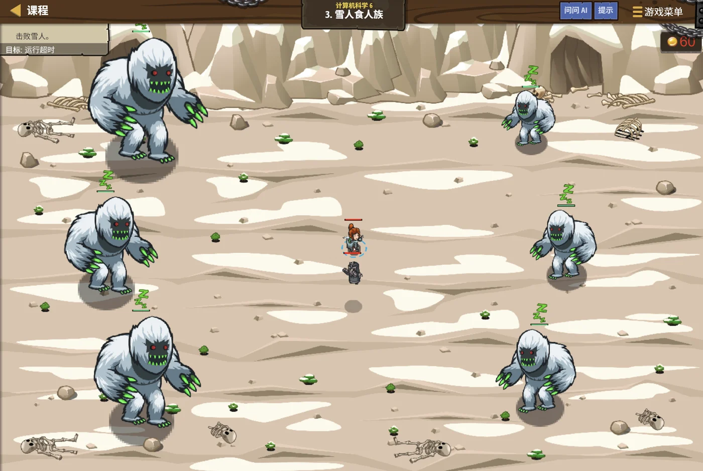

故事：云海之上有一片营地，入口的哨位像树枝一样向两侧分派巡逻。
贺舒曼把镜子转向哨位的分布图：你看，每个哨位只管自己的两个下家，
谁也不用管别人的事。
你顺着图看下去：所以从最上面那个开始走一遍，就能把所有人都数到。
对，而且走法有三种。她合上镜子，区别只在于——你是先看这个哨位、中间看、还是最后看。
扣哒考级 · GESP C++ 六级 · 第 1 单元 | 云髓天阶 CLOUDMARROW STEPS
天阶枝桠 树的基础与遍历
Trees & Traversal

贺舒曼
镜中先知 · 你的向导
石阶一路向上，渐渐没入云海。
云层之上，一株发光的巨树从台阶缝隙里长出来—— 主干分成两条枝，两条枝又各分成两条，一路向天空分叉。
贺舒曼站在树根旁，镜片后映着无数分叉的影子：你看， 它每一层的规矩都一样，可越往上越密。
你抬头望了很久：……原来"分叉"本身，就是一种结构。
云层之上，一株发光的巨树从台阶缝隙里长出来—— 主干分成两条枝，两条枝又各分成两条，一路向天空分叉。
贺舒曼站在树根旁，镜片后映着无数分叉的影子：你看， 它每一层的规矩都一样，可越往上越密。
你抬头望了很久：……原来"分叉"本身，就是一种结构。
贺舒曼 · 镜中先知
一级到五级，你打交道的都是"一条线"上的数据——数组是一排，链表是一条。从这一级开始，我们要处理"会分叉"的数据：树。
它看起来复杂，其实规则只有一条：每个结点往下连几个孩子。
assets/illustrations/py-L6-01-01_sky_tree.webp
【配图位】云海之上的石阶旁，一株发光的巨树自台阶缝隙中长出，主干向上不断分叉，每一层都按"一分二、二分四"的规律展开；每个枝梢挂着颜色不同的小灯笼；一名戴眼镜、手持镜子的先知站在树根处仰头张望，手里拿着一本写着遍历顺序的册子，云朵在树腰处流过。
0 单元导语与目标
Unit Overview
0.1 学习目标
1学完这个单元，你将能……
- 说出树和链表的根本区别
- 认全树的基本术语（根、叶子、深度……）
- 说出二叉树的特点，并能区分完全二叉树与二叉排序树
- 写出三种遍历的递归代码
- 由先序和中序推出后序
- 用两种方式在程序里表示一棵树
2对标 GESP 考纲（C++ 六级）
- 理解树的概念与基本术语
- 掌握二叉排序树（BST）的构造与中序遍历性质
- 掌握二叉树的性质与数组存储方式
- 掌握先序、中序、后序遍历
- 能由两种遍历序列推出第三种
- 考核目标：能跟踪遍历顺序、能进行遍历序列的相互推导
0.2 考纲对照
| 本单元小节 | 对应考纲条目 | 真题常考形式 |
|---|---|---|
| 1 什么是树 | 树的概念与术语 | 根、叶子、父结点、深度各指什么 |
| 2 二叉树 | 二叉树的定义与存储 | 数组存法：左孩子下标是多少（必考） |
| 3 三种遍历 | 遍历方式 | 给代码问是哪种遍历（必考） |
| 4 由遍历序列还原 | 遍历序列的推导 | 先序 + 中序 → 后序（必考） |
| 5 树的程序表示 | 树的存储结构 | 结构体表示与数组表示的区别 |
1 什么是树
What Is a Tree
1.1 从"一对多"说起
树和链表的根本区别：
链表是"一对一"——每个结点最多只有一个后继，连起来是一条线。
树是"一对多"——每个结点可以往下连好几个"孩子"， 于是一条线就展开成了一片。
但有一条规矩必须守： 除了最上面那个"根"，每个结点只能有一个"父亲"——不允许有两条路通向同一个结点， 否则就成"图"了，不是树。
树是"一对多"——每个结点可以往下连好几个"孩子"， 于是一条线就展开成了一片。
但有一条规矩必须守： 除了最上面那个"根"，每个结点只能有一个"父亲"——不允许有两条路通向同一个结点， 否则就成"图"了，不是树。
一棵树的形状
TEXT
A ← 根结点（没有父亲）
/ \
B C ← A 的孩子
/ \ \
D E F ← 叶子：D、E、F（没有孩子）
/ \
G H
A 是 B、C 的父亲；B、C 是 A 的孩子
B、C 互为兄弟
D 是 A 的"孙子"（A 是 D 的祖先）
这棵树一共 8 个结点
★ 关键：每个结点往下可以有多个孩子，
但除了 A 之外，每个结点都只有一个父亲。两个必须成立的规矩
① 除了根，每个结点恰好一个父亲；
② 从根到任何结点，路径只有一条（没有环）
② 从根到任何结点，路径只有一条（没有环）
1.2 树的常用术语
| 术语 | 含义 | 在上面那棵树里 |
|---|---|---|
| 根（root） | 最上面那个结点，唯一没有父亲的 | A |
| 叶子（leaf） | 没有孩子的结点 | D、E、F、G、H |
| 父结点 / 子结点 | 上下相邻的两个结点 | A 是 B 的父，B 是 A 的子 |
| 兄弟 | 同一个父亲的孩子 | B 和 C |
| 子树 | 某个结点连同它下面的全部后代 | 以 B 为根的子树含 B、D、E、G、H |
| 深度 / 层数 | 从根往下数，根在第 0 层（或第 1 层） | A 是第 0 层，B、C 是第 1 层 |
| 高度 | 从最深的叶子往上数到根的层数 | 这棵树的高度是 3 |
打个比方：
树就像家谱——最上面是老祖宗，往下是儿子、孙子、重孙。
每个人只能有一个父亲（这是"树"的规矩），但可以有多个孩子。
"深度"就是这个人往下数第几代，"叶子"就是没有后代的人。
每个人只能有一个父亲（这是"树"的规矩），但可以有多个孩子。
"深度"就是这个人往下数第几代，"叶子"就是没有后代的人。
2 二叉树
Binary Trees
2.1 每个结点最多两个孩子
二叉树的定义：
每个结点最多有两个孩子的树。这两个孩子分得很清楚——
一个叫左孩子，一个叫右孩子，位置不能颠倒。
注意："最多两个"意味着可以只有 0 个或 1 个—— 一个结点只有一个孩子时，还得说清是左孩子还是右孩子。
为什么专门研究二叉树？因为它规则简单、性质漂亮，而且 任何一棵树都能改造成二叉树来存。
注意："最多两个"意味着可以只有 0 个或 1 个—— 一个结点只有一个孩子时，还得说清是左孩子还是右孩子。
为什么专门研究二叉树？因为它规则简单、性质漂亮，而且 任何一棵树都能改造成二叉树来存。
图 2（SVG）：普通树与二叉树
2.2 完全二叉树与数组存储
完全二叉树：只有最下面一层可能不满，而且缺的都在右边。
换句话说：从上到下、从左到右，一个空位都不许有，直到最后一个结点为止。
它的最大好处是"能用数组存"——不用指针，直接按下标就能找到父结点和孩子。
它的最大好处是"能用数组存"——不用指针，直接按下标就能找到父结点和孩子。
完全二叉树的数组存储规律
TEXT
【方案一：根放在下标 1】（更常用）
结点 i 的左孩子 → 2 * i
结点 i 的右孩子 → 2 * i + 1
结点 i 的父亲 → i / 2
（下标 0 空着不用）
【方案二：根放在下标 0】
结点 i 的左孩子 → 2 * i + 1
结点 i 的右孩子 → 2 * i + 2
结点 i 的父亲 → (i - 1) / 2
★ 两种都常见，看清楚题目用的是哪一种。
举例（根在下标 1）：
下标： 1 2 3 4 5 6 7
内容： A B C D E F G
1 的孩子是 2、3
2 的孩子是 4、5
3 的孩子是 6、7记牢
根在 1：左孩子
2i、右孩子 2i+1；根在 0：左孩子 2i+1、右孩子 2i+2
为什么"完全"二叉树才方便用数组存？
因为数组要求"一个挨着一个，中间不能有空位"。
如果树的形状是"歪"的——比如每层只有一个孩子， 数组里就会出现大片空位，浪费得厉害。
而完全二叉树正好没有空洞，从上到下、从左到右一格不差地填满， 所以下标和位置能一一对应上。
如果树的形状是"歪"的——比如每层只有一个孩子， 数组里就会出现大片空位，浪费得厉害。
而完全二叉树正好没有空洞，从上到下、从左到右一格不差地填满， 所以下标和位置能一一对应上。
图 3（SVG）：完全二叉树的数组存储
2.3 二叉排序树：左边全小，右边全大
assets/illustrations/py-L6-01-04_bst.webp
【配图位】云髓天阶的"索引浮雕"是一棵刻在石壁上的树：根结点刻着 8，左边分叉全是比 8 小的数（3、1、6），右边分叉全是比 8 大的数（10、14）；一条金色的小径从左下的 1 一路向右上延伸，沿途的石牌依次亮起 1、3、6、8、10、14——正是中序遍历的顺序
普通的二叉树只是"每个结点最多两个孩子"；如果再加一条规矩——左子树的所有值都比根小、右子树的都比根大——它就成了二叉排序树（也叫二叉搜索树，BST）。
图解：二叉排序树——查找时每一步都能砍掉一半，平均 O(log n)
二叉排序树的插入与中序遍历
C++
// 二叉排序树（也叫二叉搜索树）的结点与插入
struct Node {
int val;
Node *left, *right;
Node(int v) : val(v), left(nullptr), right(nullptr) {}
};
Node* insert(Node* root, int val) {
if (root == nullptr) return new Node(val);
if (val < root->val) // 比根小 → 去左边
root->left = insert(root->left, val);
else if (val > root->val) // 比根大 → 去右边
root->right = insert(root->right, val);
return root; // 相等就不插入（不存重复值）
}
Node* root = nullptr;
int a[6] = {8, 3, 10, 1, 6, 14};
for (int i = 0; i < 6; i++) root = insert(root, a[i]);
// 中序遍历 → 一定是"从小到大"
void inorder(Node* p) {
if (p == nullptr) return;
inorder(p->left);
cout << p->val << " ";
inorder(p->right);
}
inorder(root); // 1 3 6 8 10 14要点 小的往左走、大的往右走；中序遍历出来就是升序
真题演练（2026 年 9 月 · C++ 六级 · 判断题）：
"对任意一棵二叉排序树执行中序遍历，得到的关键字序列一定是非递减的。"—— 这句话是正确的。
为什么？中序遍历的顺序是"左 → 根 → 右"，而二叉排序树规定了"左边全小、右边全大"，所以按这个顺序读出来，自然就是从小到大。
反过来也常考：如果中序遍历得到的序列不是递增的，那这棵树就一定不是二叉排序树。
"对任意一棵二叉排序树执行中序遍历，得到的关键字序列一定是非递减的。"—— 这句话是正确的。
为什么？中序遍历的顺序是"左 → 根 → 右"，而二叉排序树规定了"左边全小、右边全大"，所以按这个顺序读出来，自然就是从小到大。
反过来也常考：如果中序遍历得到的序列不是递增的，那这棵树就一定不是二叉排序树。
三条要记牢的性质：
① 中序遍历 = 升序（最常考）；
② 查找平均 O(log n)——每走一步就砍掉一半，和二分查找一个道理；
③ 最坏会退化成链表——如果按 1、2、3、4、5 的顺序插入，树就歪成一条链，查找变成 O(n)。打个比方：二叉排序树像一本按目录排好的字典，但如果一直往同一侧加词条，目录就掉成一串了。
① 中序遍历 = 升序（最常考）；
② 查找平均 O(log n)——每走一步就砍掉一半，和二分查找一个道理；
③ 最坏会退化成链表——如果按 1、2、3、4、5 的顺序插入，树就歪成一条链，查找变成 O(n)。打个比方：二叉排序树像一本按目录排好的字典，但如果一直往同一侧加词条，目录就掉成一串了。
3 三种遍历
Traversal
3.1 先序、中序、后序
三种遍历的区别，只在"根"什么时候被访问。
先序遍历——根 → 左 → 右（先访问根）
中序遍历——左 → 根 → 右（根在中间）
后序遍历——左 → 右 → 根（根在最后）
注意：这三种都是"递归"定义的—— "访问左子树"时，也是按同一套规则去访问的。
还有第四种"层序遍历"—— 从上到下、从左到右一层层访问，它靠"队列"实现（下一课会讲）。
中序遍历——左 → 根 → 右（根在中间）
后序遍历——左 → 右 → 根（根在最后）
注意：这三种都是"递归"定义的—— "访问左子树"时，也是按同一套规则去访问的。
还有第四种"层序遍历"—— 从上到下、从左到右一层层访问，它靠"队列"实现（下一课会讲）。
拿同一棵树走一遍
TEXT
A
/ \
B C
/ \ \
D E F
【先序】根 左 右：A → (B 为根的子树) → (C 为根的子树)
A, B, D, E, C, F
【中序】左 根 右：先走完 B 的子树，再 A，再 C 的子树
D, B, E, A, C, F
← 注意：A 排在 B 的左子树之后、右子树之前
【后序】左 右 根：先走完两棵子树，最后才轮到 A
D, E, B, F, C, A
← 注意：根 A 排在最后
★ 三个序列的第一个元素：
先序是 A（根最先）、中序是 D（最左）、后序是 D（最左）一句话记法
先序"根在前"、中序"根在中"、后序"根在后"——
左右两个子树的相对顺序，三种遍历里都是一样的：先左后右。
3.2 遍历的代码
三段代码只差一句话的位置
C++
struct TreeNode {
int val;
TreeNode *left;
TreeNode *right;
};
// 【先序】根 → 左 → 右
void preOrder(TreeNode *root) {
if (root == nullptr) return; // 出口
cout << root->val << " "; // ★ 先输出根
preOrder(root->left);
preOrder(root->right);
}
// 【中序】左 → 根 → 右
void inOrder(TreeNode *root) {
if (root == nullptr) return;
inOrder(root->left);
cout << root->val << " "; // ★ 输出在中间
inOrder(root->right);
}
// 【后序】左 → 右 → 根
void postOrder(TreeNode *root) {
if (root == nullptr) return;
postOrder(root->left);
postOrder(root->right);
cout << root->val << " "; // ★ 输出在最后
}看代码认遍历
看那句
两次递归之前 = 先序；夹在中间 = 中序；两次之后 = 后序
cout 在哪两次递归调用的中间、前面还是后面——两次递归之前 = 先序；夹在中间 = 中序；两次之后 = 后序
为什么这三段代码几乎一模一样？
因为它们做的是同一件事：按某个顺序"走遍"一棵树。
差别只在于：这个结点本身，是在两个子结点之前、之间、还是之后被处理的。
而"走遍左子树"和"走遍右子树"这两个动作，三种遍历里完全一样。
所以写遍历代码时，先写好"左、右"两次递归， 再想想"我这个结点该插在哪儿"就行了。
差别只在于：这个结点本身，是在两个子结点之前、之间、还是之后被处理的。
而"走遍左子树"和"走遍右子树"这两个动作，三种遍历里完全一样。
所以写遍历代码时，先写好"左、右"两次递归， 再想想"我这个结点该插在哪儿"就行了。
图 4（SVG）：三种遍历——根的位置不同
assets/illustrations/py-L6-01-02_traversal_orders.webp
【配图位】三棵一模一样、并排而立的发光云树；每棵树上都有一条带数字标注的发光路径蜿蜒穿过全部结点，但三条路径的绕行顺序各不相同（第一条从树顶开始、第二条从最左的枝梢开始、第三条从枝梢绕回树顶结束）；一名戴眼镜的先知站在三棵树前，手持镜子依次照看每条路径。
4 由遍历序列还原
Reconstructing
4.1 先序 + 中序 → 后序
两条线索要抓住：
① 先序遍历的第一个元素，一定是根；
② 在中序遍历里找到这个根，它左边全是左子树、右边全是右子树。
有了这两条，就能一层层"切"下去，把整棵树的形状还原出来。
注意：只有"先序+中序"或"后序+中序"才能唯一确定一棵树。 先序 + 后序在很多情况下是不够的。
② 在中序遍历里找到这个根，它左边全是左子树、右边全是右子树。
有了这两条，就能一层层"切"下去，把整棵树的形状还原出来。
注意：只有"先序+中序"或"后序+中序"才能唯一确定一棵树。 先序 + 后序在很多情况下是不够的。
4.2 一步步推的方法
完整推导一遍
TEXT
已知：先序 = A B D E C F，中序 = D B E A C F，求后序。
【第 1 步】先序第一个是 A → 根是 A
在中序里找 A：D B E 【A】 C F
→ A 左边 D B E 是左子树，右边 C F 是右子树
【第 2 步】看左子树
先序里 A 之后紧跟 3 个（左子树的大小是 3）：B D E
中序里左子树是：D B E
先序第一个 B → 左子树的根是 B
在中序" D B E "里找 B：D 【B】 E
→ B 左边 D，右边 E
所以 B 的左孩子 D、右孩子 E
【第 3 步】看右子树
剩下的先序是 C F，中序也是 C F
先序第一个 C → 右子树的根是 C
在中序" C F "里找 C：【C】 F
→ C 左边空，右边 F
所以 C 没有左孩子，右孩子是 F
【还原出来的树】
A
/ \
B C
/ \ \
D E F
【第 4 步】对这棵树求后序：左 右 根
左子树（B 为根）：D E B
右子树（C 为根）：F C
根：A
→ 后序 = D E B F C A ✔答案 D E B F C A
推法口诀 先序找根 → 中序切左右 → 递归下去
推法口诀 先序找根 → 中序切左右 → 递归下去
怎么找"左子树有几个人"？
关键看中序：
在中序序列里，根左边有几个元素，左子树就有几个结点。
然后回到先序序列： 紧跟在根后面的那几个元素，就是左子树的先序。 剩下的就是右子树。
这两处一对照，就能把"左子树"从两条序列里同时切出来—— 然后对左子树、右子树重复同样的动作。
然后回到先序序列： 紧跟在根后面的那几个元素，就是左子树的先序。 剩下的就是右子树。
这两处一对照，就能把"左子树"从两条序列里同时切出来—— 然后对左子树、右子树重复同样的动作。
5 树的程序表示
Representing Trees
5.1 结构体 + 指针
最直观的方式：和链表几乎一样
C++
struct TreeNode {
int val; // 数据
TreeNode *left; // 指向左孩子
TreeNode *right; // 指向右孩子
};
// 新建一个结点
TreeNode *p = new TreeNode();
p->val = 10;
p->left = p->right = nullptr;
// 访问左孩子的值
cout << p->left->val << endl;和链表结点的区别
链表结点只有一个
就多了这一个指针，"线"就变成了"树"
next，树结点有两个：left 和 right就多了这一个指针，"线"就变成了"树"
5.2 数组表示法
完全二叉树：用数组更省事
C++
// 根放在下标 1
int tree[1005];
// 左孩子
int leftChild = 2 * i;
// 右孩子
int rightChild = 2 * i + 1;
// 父亲
int parent = i / 2;
// 判断是不是叶子（没有左孩子就是叶子）
if (2 * i > n) {
// i 是叶子
}
// 用数组做中序遍历也很方便
void inOrder(int i) {
if (i > n) return; // 越界就是空结点
inOrder(2 * i); // 左孩子
cout << tree[i] << " "; // 根
inOrder(2 * i + 1); // 右孩子
}两种方式的取舍
数组法省内存、没有指针、写起来快，但只适合完全二叉树
指针法什么形状都能存，代价是每个结点多两个指针、要管内存
指针法什么形状都能存，代价是每个结点多两个指针、要管内存
数组法只适合"形状规整"的树。
因为数组法的下标和位置是硬绑定的：左孩子必须是
如果树长得很歪——比如一条链那样，每层只有一个孩子—— 那么下标会飞快地翻倍，数组要开到
所以： 完全二叉树用数组；普通的、形状任意的树用指针。
考试里给数组下标的话，千万先看清"根是从 0 开始还是从 1 开始"。
2i。如果树长得很歪——比如一条链那样，每层只有一个孩子—— 那么下标会飞快地翻倍，数组要开到
2ⁿ 那么大，根本开不起。所以： 完全二叉树用数组；普通的、形状任意的树用指针。
考试里给数组下标的话，千万先看清"根是从 0 开始还是从 1 开始"。
6 代码实战
Level Practice
关卡
雪人食人族
进入关卡 →思路：用指针建一棵二叉树，再用三种遍历分别走一遍， 顺便求出树的高度。

assets/stages/py-L6-01-stage1_yeti_cannibals.webp
【截图位】雪人食人族关卡：云海营地与哨位分支同框，代码编辑区可见二叉树递归遍历。
建树 + 三种遍历 + 求高度
C++
#include <iostream>
using namespace std;
struct TreeNode {
int val;
TreeNode *left, *right;
};
TreeNode* build(int x) {
if (x == 0) return nullptr; // 0 表示这个位置是空的
TreeNode *p = new TreeNode();
p->val = x;
p->left = p->right = nullptr;
return p;
}
void preOrder(TreeNode *root) {
if (root == nullptr) return;
cout << root->val << " ";
preOrder(root->left);
preOrder(root->right);
}
int height(TreeNode *root) {
if (root == nullptr) return 0; // ★ 空结点高度是 0
int leftH = height(root->left);
int rightH = height(root->right);
return max(leftH, rightH) + 1; // ★ 取高的那边再加 1
}
int main() {
// 手工搭一棵：A=1 为根，左 2、右 3，2 的左是 4
TreeNode *root = build(1);
root->left = build(2);
root->right = build(3);
root->left->left = build(4);
preOrder(root);
cout << endl; // 1 2 4 3
cout << height(root) << endl; // 3
return 0;
}OUTPUT 1 2 4 3 / 3
高度为什么是 3？ 最长的路径是 1 → 2 → 4，一共 3 个结点，所以高度是 3
高度为什么是 3？ 最长的路径是 1 → 2 → 4，一共 3 个结点，所以高度是 3
和本单元的关系：
求二叉树高度是递归在树上的经典用法，也是真题原题。
思路一句话： 一棵树的高度 = 左右两棵子树里较高的那个高度 + 1。
而"空结点的高度是 0"就是递归的出口—— 一个空结点都没有，当然高度是 0。
这类"对每个结点做同样的事"的问题，用递归写总是最短的： 因为树的定义本身就是递归的——"一棵树由一个根和两棵子树组成"。
去扣哒世界闯这一关 →
思路一句话： 一棵树的高度 = 左右两棵子树里较高的那个高度 + 1。
而"空结点的高度是 0"就是递归的出口—— 一个空结点都没有，当然高度是 0。
这类"对每个结点做同样的事"的问题，用递归写总是最短的： 因为树的定义本身就是递归的——"一棵树由一个根和两棵子树组成"。
assets/illustrations/py-L6-01-03_array_tree.webp
【配图位】云海上一排依次编号的石制台阶（下标 1、2、3、4、5、6），台阶上各刻着一个发光符号；台阶之间用发光的弧线两两相连，标出"下一级在哪儿"的关系——1 号连着 2、3 号，2 号连着 4、5 号，3 号连着 6 号；一名戴眼镜的先知站在台阶前，手里拿着一面镜子反射出这些连线的图案。
7 常见陷阱
Common Pitfalls

扣哒鸭 · 调试官
树的坑集中在"顺序"和"边界"上。四条。
1
遍历时忘了判空。

扣哒鸭：递归的第一行必须是
走到叶子的"空孩子"时，必须停下来。 少了这句，就会在空指针上取成员，程序直接崩溃。
if (root == nullptr) return; ——走到叶子的"空孩子"时，必须停下来。 少了这句，就会在空指针上取成员，程序直接崩溃。
正确做法：遍历函数第一行先判空
2
把三种遍历的"根的位置"记混了。
扣哒鸭：先序：根在最前；中序：根在中间；后序：根在最后。
而"左、右"两个子树的先后顺序，三种遍历里都一样——永远先左后右。
记不住就想名字："先"序先见根、"后"序最后见根。
而"左、右"两个子树的先后顺序，三种遍历里都一样——永远先左后右。
记不住就想名字："先"序先见根、"后"序最后见根。
口诀：先序根前、中序根中、后序根后；左右永远先左后右
3
以为"先序 + 后序"也能唯一确定一棵树。

扣哒鸭：不行。
先序和后序都只能告诉你"根是谁"和"子树的大小"，却分不清左右。
必须有一条"中序"，才能唯一确定树的形状。
必须有一条"中序"，才能唯一确定树的形状。
记牢：先序+中序 ✅；后序+中序 ✅；先序+后序 ❌
4
数组存树时把下标公式记反了。

扣哒鸭：根在 1：左孩子
根在 0：左孩子
两组只差 1，但用错了整棵树的位置就全乱了。
2i、右孩子 2i+1；根在 0：左孩子
2i+1、右孩子 2i+2。两组只差 1，但用错了整棵树的位置就全乱了。
做法：先看清题目里根的下标是 0 还是 1
8 题目练习
Practice
前 5 题改编自 C++ 六级真题，其余为原创练习题。
改编自 2026 年 9 月 · C++ 六级 · 第 6 题单选题
下列函数实现了二叉树的哪种遍历方式（ ）。
void visit(TreeNode *root) {
if (root == nullptr)
return;
visit(root->left);
cout << root->val << " ";
visit(root->right);
}
A.前序遍历 B.中序遍历 C.后序遍历 D.层序遍历
查看答案与详解
答案：B。看那句
这段代码的顺序是：
①
②
③
也就是"左 → 根 → 右"，正是中序遍历 ✔
三者的判别口诀：
输出在两次递归之前 → 前序（根前后）；
输出夹在两次递归中间 → 中序（根在中）；
输出在两次递归之后 → 后序（根在后）。
D 项为什么错？ 层序遍历是"从上到下、从左到右一层层来"， 它要靠"队列"实现，而不是这种递归写法。
顺带说一句：用中序遍历一棵二叉搜索树， 得到的序列一定是非递减的—— 这是二叉搜索树最重要的性质，六级常考。
对应小节3.2 遍历的代码。
cout 插在哪个位置，就能判出是哪种遍历。这段代码的顺序是：
①
visit(root->left) —— 先走左子树；②
cout —— 然后输出这个结点自己；③
visit(root->right) —— 最后走右子树。也就是"左 → 根 → 右"，正是中序遍历 ✔
三者的判别口诀：
输出在两次递归之前 → 前序（根前后）；
输出夹在两次递归中间 → 中序（根在中）；
输出在两次递归之后 → 后序（根在后）。
D 项为什么错？ 层序遍历是"从上到下、从左到右一层层来"， 它要靠"队列"实现，而不是这种递归写法。
顺带说一句：用中序遍历一棵二叉搜索树， 得到的序列一定是非递减的—— 这是二叉搜索树最重要的性质，六级常考。
对应小节3.2 遍历的代码。
改编自 2026 年 9 月 · C++ 六级 · 第 7 题单选题
已知一棵二叉树的先序遍历序列为
A B D E C F，
中序遍历序列为 D B E A C F，则其后序遍历序列是（ ）。
A.
C.
D E B F C A B.D B E F C AC.
E D B F C A D.D E B C F A
查看答案与详解
答案：A。两步走：先还原树，再求后序。
第 1 步：先序第一个是
在中序
第 2 步：左子树有 3 个结点， 所以先序里 A 之后的 3 个
它的第一个是
第 3 步：右子树先序是
还原出的树：
第 4 步：求后序（左 → 右 → 根）：
左子树（B 为根）→
右子树（C 为根）→
最后根 →
合起来：D E B F C A ✔
B 项把左子树内部写成了 D B E（那是中序，不是后序）； C 项把 D、E 的次序颠倒了； D 项把右子树里 C 的位置放错了。
对应小节4.2 一步步推的方法。
第 1 步：先序第一个是
A → 根是 A。在中序
D B E A C F 里找 A：
左边 D B E 是左子树，右边 C F 是右子树。第 2 步：左子树有 3 个结点， 所以先序里 A 之后的 3 个
B D E 是左子树的先序。它的第一个是
B → 左子树的根是 B；
在中序 D B E 里找 B：左 D、右 E。第 3 步：右子树先序是
C F，
第一个是 C → 根是 C；
在中序 C F 里找 C：左空、右 F。还原出的树：
A / \ B C / \ \D E F第 4 步：求后序（左 → 右 → 根）：
左子树（B 为根）→
D E B；右子树（C 为根）→
F C；最后根 →
A。合起来：D E B F C A ✔
B 项把左子树内部写成了 D B E（那是中序，不是后序）； C 项把 D、E 的次序颠倒了； D 项把右子树里 C 的位置放错了。
对应小节4.2 一步步推的方法。
改编自 2026 年 9 月 · C++ 六级 · 第 8 题单选题
下面函数用于计算二叉树的高度，横线处应填写（ ）。
int height(TreeNode *root) {
if (root == nullptr)
return 0;
int leftH = height(root->left);
int rightH = height(root->right);
return __________________________;
}
A.
C.
leftH + rightH B.min(leftH, rightH) + 1C.
max(leftH, rightH) D.max(leftH, rightH) + 1
查看答案与详解
答案：D。先想清楚"高度"是什么：
从根到最远叶子的结点个数。
那它和左右子树的高度有什么关系？
一棵树的最长路径，一定是从根出发、往下钻进某一棵子树。 它可能钻进左边，也可能钻进右边——哪边深就走哪边。
所以：树的高度 = 左右子树中较高的那个高度 + 1（加上根自己这一层） ✔
A 项把两个高度加起来了——那是"结点总数"的算法，不是高度；
B 项取了较矮的那边——那算出来的是"从根到最近叶子的层数"，反了；
C 项忘了加 1——漏掉了根自己这一层， 结果会比真实高度少 1。
验证一下：只有一个结点的树，
而出口
对应小节3.2 遍历的代码（同一套递归骨架）。
那它和左右子树的高度有什么关系？
一棵树的最长路径，一定是从根出发、往下钻进某一棵子树。 它可能钻进左边，也可能钻进右边——哪边深就走哪边。
所以：树的高度 = 左右子树中较高的那个高度 + 1（加上根自己这一层） ✔
A 项把两个高度加起来了——那是"结点总数"的算法，不是高度；
B 项取了较矮的那边——那算出来的是"从根到最近叶子的层数"，反了；
C 项忘了加 1——漏掉了根自己这一层， 结果会比真实高度少 1。
验证一下：只有一个结点的树，
leftH = rightH = 0，
max(0,0) + 1 = 1 ✔ 正是"1 个结点、高度 1"。而出口
if (root == nullptr) return 0; 也很讲究：
空结点的高度是 0——这样叶子的高度就是 max(0,0)+1 = 1，逻辑自洽。对应小节3.2 遍历的代码（同一套递归骨架）。
改编自 2026 年 9 月 · C++ 六级 · 判断题 第 4 题判断题
一棵完全二叉树按照从上到下、从左到右的顺序，
将结点依次存储在数组
tree[1]、tree[2]、…… 中。
若结点 tree[i] 存在左孩子，则其左孩子存储在
tree[2 * i] 中。（ ）查看答案与详解
答案：正确（√）。这正是"根放在下标 1"时的标准规律。
完整的对应关系：
结点
结点
结点
验算一下：根在下标 1，它的左孩子在下标 2、右孩子在下标 3； 下标 2 的结点的左孩子在下标 4、右孩子在下标 5—— 正好是"从上到下、从左到右"依次填进去的顺序 ✔
为什么这样可行？ 因为完全二叉树没有空洞—— 每一层都从左到右填满，只有最后一层可能不满、而且缺的在右边。
正因为形状这么规整，下标和位置才能一一对应， 用不着指针去连。
对比一下"根放在下标 0"的版本： 左孩子是
对应小节2.2 完全二叉树与数组存储。
完整的对应关系：
结点
i 的左孩子 → 2 * i；结点
i 的右孩子 → 2 * i + 1；结点
i 的父亲 → i / 2。验算一下：根在下标 1，它的左孩子在下标 2、右孩子在下标 3； 下标 2 的结点的左孩子在下标 4、右孩子在下标 5—— 正好是"从上到下、从左到右"依次填进去的顺序 ✔
为什么这样可行？ 因为完全二叉树没有空洞—— 每一层都从左到右填满，只有最后一层可能不满、而且缺的在右边。
正因为形状这么规整，下标和位置才能一一对应， 用不着指针去连。
对比一下"根放在下标 0"的版本： 左孩子是
2i+1、右孩子是 2i+2——两组只差 1，别看错。对应小节2.2 完全二叉树与数组存储。
改编自 2026 年 9 月 · C++ 六级 · 判断题 第 5 题判断题
对任意一棵二叉搜索树执行中序遍历，得到的关键字序列一定是非递减的。（ ）
查看答案与详解
答案：正确（√）。
这是二叉搜索树最核心、也最有用的一条性质。
二叉搜索树的定义： 对任意结点，它左子树里所有结点的值都小于它，右子树里所有结点的值都大于它。
中序遍历的顺序是"左 → 根 → 右"：
① 先走完左子树——里面的值都比根小；
② 再输出根；
③ 最后走完右子树——里面的值都比根大。
而左子树、右子树内部也各自是二叉搜索树， 递归下去同样满足这个规律。
所以整个输出序列一定是"小 → 大"（允许相等时就是非递减） ✔
这条性质有什么用？ 它让二叉搜索树能当"动态的有序表"用： 插入、删除、查找都不需要把数据挪来挪去，而只要中序遍历一遍，就能得到全部有序数据。
反过来也成立： 如果一棵树的中序遍历不是非递减的，那它一定不是二叉搜索树。 这是判断题里的常用判据。
对应小节3.2 遍历的代码。
二叉搜索树的定义： 对任意结点，它左子树里所有结点的值都小于它，右子树里所有结点的值都大于它。
中序遍历的顺序是"左 → 根 → 右"：
① 先走完左子树——里面的值都比根小；
② 再输出根；
③ 最后走完右子树——里面的值都比根大。
而左子树、右子树内部也各自是二叉搜索树， 递归下去同样满足这个规律。
所以整个输出序列一定是"小 → 大"（允许相等时就是非递减） ✔
这条性质有什么用？ 它让二叉搜索树能当"动态的有序表"用： 插入、删除、查找都不需要把数据挪来挪去，而只要中序遍历一遍，就能得到全部有序数据。
反过来也成立： 如果一棵树的中序遍历不是非递减的，那它一定不是二叉搜索树。 这是判断题里的常用判据。
对应小节3.2 遍历的代码。
改编自 2026 年 6 月 · C++ 六级 · 判断题 第 7 题判断题
若用数组按层序存储完全二叉树，且根节点下标为 0，
则下标为
i 的节点左孩子下标为 2 * i + 1，
右孩子下标为 2 * i + 2。（ ）查看答案与详解
答案：正确（√）。这是"根放在下标 0"时的标准公式。
对比两套公式，只看一眼就能记住：
根在 1：左孩子
根在 0：左孩子
验算（根在下标 0）：
根在下标 0 → 它的左孩子在下标 1、右孩子在下标 2 ✔
下标 1 的结点 → 左孩子在 2×1+1 = 3、右孩子在 2×1+2 = 4 ✔
正好是层序从左到右依次填入的顺序。
为什么两套公式差 1？ 因为"根放 0"相当于把"根放 1"的整体下标往前挪了一格—— 于是孩子下标的计算里就多出 1 的偏移。
实际做题时的建议： 先看清题目给的数组是从 0 开始还是从 1 开始，再选公式。 这 1 之差，用错了整棵树的位置就全乱了。
对应小节2.2 完全二叉树与数组存储。
对比两套公式，只看一眼就能记住：
根在 1：左孩子
2i、右孩子 2i + 1、父亲 i / 2；根在 0：左孩子
2i + 1、右孩子 2i + 2、父亲 (i − 1) / 2。验算（根在下标 0）：
根在下标 0 → 它的左孩子在下标 1、右孩子在下标 2 ✔
下标 1 的结点 → 左孩子在 2×1+1 = 3、右孩子在 2×1+2 = 4 ✔
正好是层序从左到右依次填入的顺序。
为什么两套公式差 1？ 因为"根放 0"相当于把"根放 1"的整体下标往前挪了一格—— 于是孩子下标的计算里就多出 1 的偏移。
实际做题时的建议： 先看清题目给的数组是从 0 开始还是从 1 开始，再选公式。 这 1 之差，用错了整棵树的位置就全乱了。
对应小节2.2 完全二叉树与数组存储。
原创练习题判断题
在一棵树中，从根结点到任意一个结点的路径都是唯一的。（ ）
查看答案与详解
答案：正确（√）。
这正是"树"区别于"图"的关键规矩之一，也是树能"层层分叉"而不混乱的原因。
为什么路径唯一？ 因为树有两条铁律：
① 除了根，每个结点恰好只有一个父亲；
② 树里不会有"环"。
假设从根到结点 X 有两条不同的路径： 那么这两条路径在分开之后、又会合到 X 上—— 这意味着 X 有两个不同的父亲（两条路径最后一步来自不同结点）， 与"每个结点只有一个父亲"矛盾。
所以路径不可能有两条，只能有一条。
这条性质的实际意义： 在树里"往下走"永远不会绕圈，所以树的遍历一定会终止—— 你只要一路往下，路径只会越来越"深"，最终必然走到叶子。
对比一下"图"： 图里可以有环、一个结点可以有多个邻居， 所以从 A 到 B 可能有好几条路——这就是树和图最本质的差别。
对应小节1.1 从"一对多"说起。
为什么路径唯一？ 因为树有两条铁律：
① 除了根，每个结点恰好只有一个父亲；
② 树里不会有"环"。
假设从根到结点 X 有两条不同的路径： 那么这两条路径在分开之后、又会合到 X 上—— 这意味着 X 有两个不同的父亲（两条路径最后一步来自不同结点）， 与"每个结点只有一个父亲"矛盾。
所以路径不可能有两条，只能有一条。
这条性质的实际意义： 在树里"往下走"永远不会绕圈，所以树的遍历一定会终止—— 你只要一路往下，路径只会越来越"深"，最终必然走到叶子。
对比一下"图"： 图里可以有环、一个结点可以有多个邻居， 所以从 A 到 B 可能有好几条路——这就是树和图最本质的差别。
对应小节1.1 从"一对多"说起。
原创练习题编程题
题目要求：读入一棵完全二叉树（按层序给出
约定：根结点存放在数组下标 1 处，结点
样例：输入
n 个结点的值，
空结点用 -1 表示），输出它的中序遍历序列。约定：根结点存放在数组下标 1 处，结点
i 的左孩子是
2i、右孩子是 2i+1。样例：输入
5 / 10 20 30 40 50，
输出 40 20 50 10 30。查看参考答案与要点
#include <iostream>
using namespace std;
int tree[100005];
int n;
void inOrder(int i) {
if (i > n || tree[i] == -1) return; // ★ 越界或空结点 → 停
inOrder(2 * i); // 左孩子
cout << tree[i] << " "; // 根
inOrder(2 * i + 1); // 右孩子
}
int main() {
cin >> n;
for (int i = 1; i <= n; i++) cin >> tree[i];
inOrder(1); // 从根（下标 1）开始
cout << endl;
return 0;
}
输入 5 / 10 20 30 40 50 输出：40 20 50 10 30
要点：
① 数组存树时，递归的参数是"下标"而不是"指针"——
inOrder(2 * i) 就是"走进左孩子"；
② 出口要判两种情况：
i > n（下标越界）和 tree[i] == -1（这个位置是空的），
两个都得写；
③ 遍历的骨架和指针版一模一样，只是"找孩子"的方式从
root->left 变成了 2 * i——这正是数组存法的方便之处；
④ 输入的 5 个数按层序摆好，树形是：
10
20 30
40 50
中序（左→根→右）就是 40, 20, 50, 10, 30 ✔
⑤ 数组要开得比 n 大一些——因为最下面一层可能用到接近 2n 的下标。
对应小节5.2 数组表示法。
9 本单元小结
Unit Summary
贺舒曼 · 镜中先知
四句话记住树：一、链表是"一对一"，树是"一对多"——但除了根，每个结点只有一个父亲。
二、二叉树的数组存法：左孩子
2i、右孩子 2i+1（根在 1 时）。三、三种遍历只差"根"的位置：先序根前、中序根中、后序根后；左右永远先左后右。
四、先序找根 + 中序切左右 = 能还原整棵树；先序 + 后序不行。
树看明白了。下一站是云叶密钥——那里的每片叶子上，都刻着一串 0 和 1。
你在天阶枝桠下收获了什么
- 树 vs 链表——链表一对一（一条线）；树一对多（会分叉）。
- 树的规矩——除根外每个结点恰好一个父亲； 从根到任何结点的路径唯一（没有环）。
- 基本术语——根、叶子、父子、兄弟、子树、深度、高度。
- 二叉树——每个结点最多两个孩子， 而且左、右分得很清楚，不能颠倒。
- 完全二叉树——从上到下、从左到右一个空位都没有，所以能用数组存。
- 数组存法（根在 1）——左孩子
2i、右孩子2i+1、父亲i/2。 - 数组存法（根在 0）——左孩子
2i+1、右孩子2i+2、父亲(i−1)/2。 - 三种遍历——先序（根左右）、中序（左根右）、后序（左右根）。
- 怎么写——先写好左右两次递归，再决定自己的输出插在哪儿。
- 看代码判遍历——看
cout在两次递归的前面、中间还是后面。 - 还原树的钥匙——先序（或后序）找根 + 中序切左右。
- 先序 + 后序不行——分不清左右，必须有一条中序。
- 求高度——
max(leftH, rightH) + 1， 空结点高度是 0。 - 二叉搜索树——中序遍历一定是非递减序列。
- 两种表示法——形状规整用数组，形状任意用指针。
下一站：云叶密钥
云层中飘着一片叶片森林——每片叶子的边缘都刻着一串由短到长的 0 和 1，
出现频率越高的叶子，刻痕越短。
下一单元我们学哈夫曼树与编码：
怎么让常用的符号用短码、罕见的用长码，从而把一整段文字压得更短。